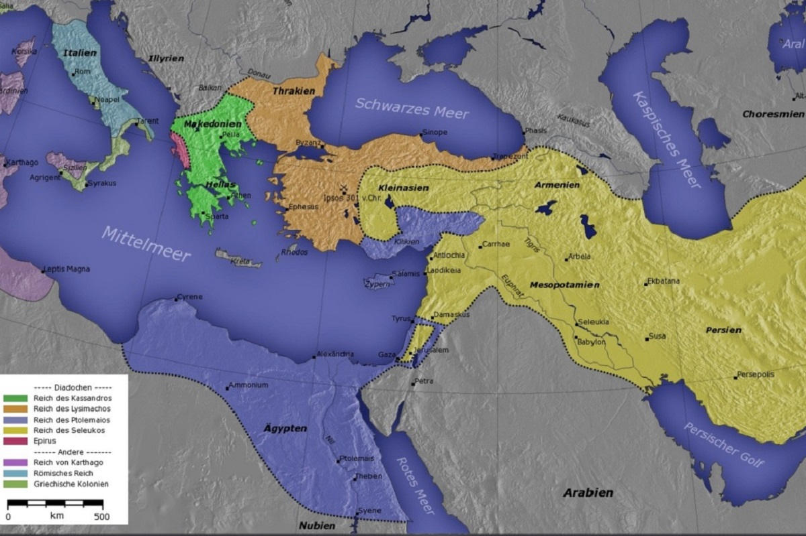
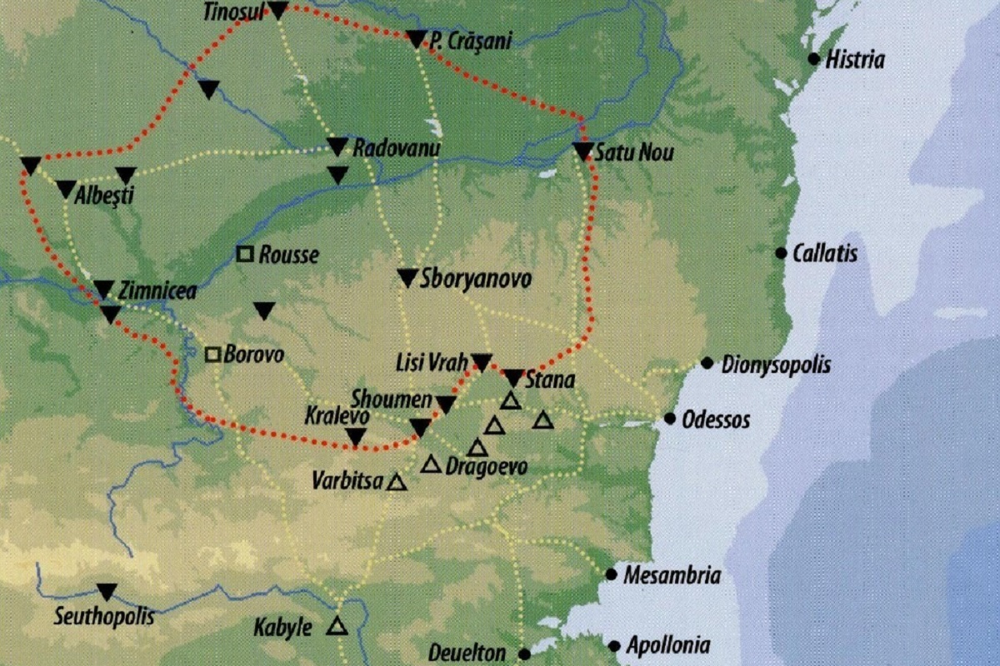

© Andrei Bertescu


 printați
printați
+40 725 099 253 |
andrei.bertescu2@gmail.com |
Războaiele macedoniene
În anul 300 î.Hr. are loc un conflict armat între uniunea de triburi geto-dacă din Câmpia munteană în frunte cu Dromihete (Dromichaites) și regele Traciei elenistice, Lisimah (Lisimachos). Lisimah voia să-și extindă regatul și pe malul stâng al Dunării, iar Dromihete dorea înapoi niște cetăți supuse de Lisimah, de pe malul drept al Dunării, din Dobrogea. Campania inițiată de suveranul elenistic la nordul Dunării și condusă de fiul său Agathocles se încheie cu un eșec. Agathocles este făcut prizonier de către căpetenia Dromihete, care s-a purtat foarte bine cu el și l-a trimis după câtva timp înapoi la Lisimah cu daruri, sperând să-și recapete astfel cetățile pierdute. În schimb Lisimah pleacă în anul 292 î.Hr. cu o armată foarte mare împotriva lui Dromihete. Armata macedoniană trece Dunărea. După scurt timp suferă de foame și de sete (geții pustiiseră totul în calea năvălitorilor).
Armata lui Lisimah este înconjurată și capturată. Dromihete s-a purtat și de această dată frumos cu prizonierii. El îl duce pe Lisimah în Helis, capitala geților. Locuitorii cer uciderea lui Lisimah. Dromihete îi convinge că e mai bine să-l lase în viață, pentru că astfel își vor primi cetățile înapoi. Pe de altă parte, le spune că dacă Lisimah va muri, se va ridica alt rege care va veni împotriva lor. Dromihete organizează apoi un mare ospăț în cinstea regelui macedonian. Lisimah a făgăduit că va fi prietenul și aliatul geților. Lisimah, eliberat, le-a redat geților cetățile de pe malul drept al Dunării. Se pare chiar că Dromihete a luat de soție pe una din fiicele regelul macedonian.
Conform informațiilor rămase de la Strabon, dacii locuiau în zona muntoasă până în partea superioară a Dunării, denumită Danubius - de la izvoare și până la Drobeta, iar geții stăpâneau partea de la cataracte, denumită Istru până la vărsarea acesteia în Marea Neagră. Tot el spune că „dacii au aceeași limbă cu geții” și că „elenii i-au socotit pe geți de neam tracic”. De asemenea, Dio Cassius ce spune că regele getic Burebista i-a zdrobit pe boii și tauriscii conduși de regele Critasir, afirmă că Critasir a fost învins de daci, și păstrează denumirea luptătorilor armatei de geți sau daci pentru a denumi popoarele de la Nord.
|  |  |